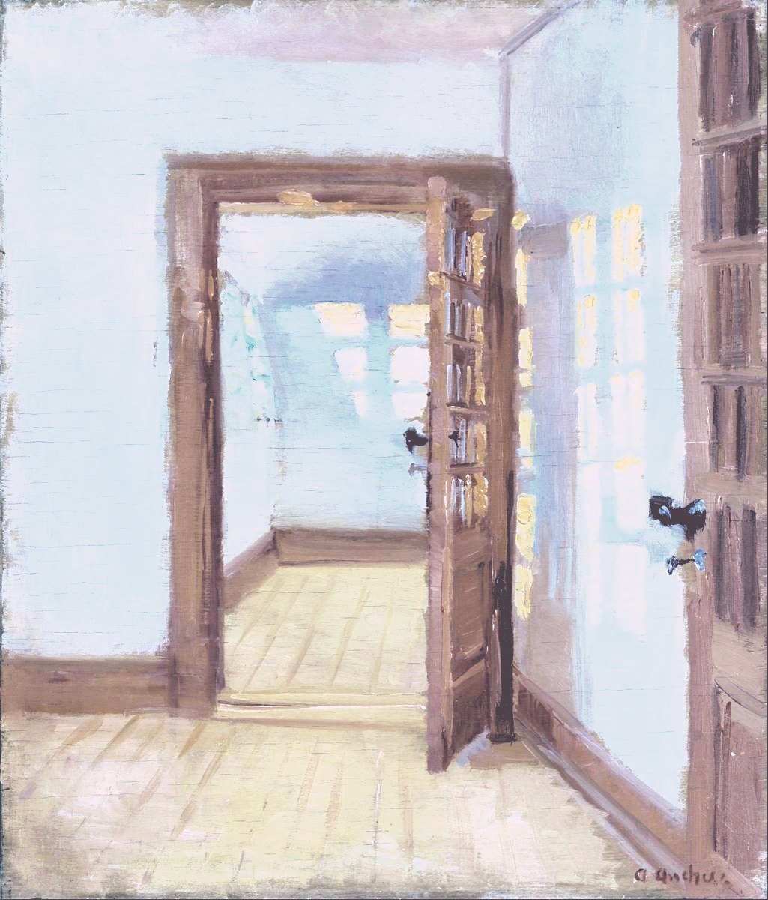

Работаем вместе. Если после второго созвона план тебе подходит, выбираем дату старта, детали оплаты обсуждаем в личке. Беру двух человек одновременно, чтобы работать глубоко и не распыляться, поэтому старт бывает через несколько недель.
45–60 минут, чтобы понять, подходит ли тебе программа
Ты рассказываешь, что происходит, я задаю вопросы, а в конце говорю, могу ли помочь, и если нет — к кому, по-моему, лучше пойти.
45–60 минут онлайн, бесплатно
Отвечаю за день-два. Напиши в двух словах, с каким запросом приходишь, чтобы я сразу ухватила, про что разговор.
Зачем этот разговор
Три месяца один на один — это много времени и доверия с обеих сторон, и заходить в них по описанию на сайте, даже подробному, я никому не советую. За этот разговор ты посмотришь, как со мной разговаривается, а я пойму, про дело ли твой вопрос, подходит ли формат сейчас и смогу ли я помочь именно тебе (поговорить я рада почти всегда).
Как это проходит
- доДо разговора. Ты пишешь мне в Telegram, одной фразой или подробно. Отвечу за день-два и предложу два-три варианта времени; созваниваемся по видео.
- 0–20 минС нуля до двадцатой минуты. Рассказываешь ты, как получается: что закончилось и что уже пробовали делать. Если замолчишь, я не влезаю — я перестала бояться пауз в разговоре.
- 20–35 минС двадцатой до тридцать пятой минуты. Потом спрашиваю я, немного: что ещё происходит в жизни, кроме работы, сколько есть сил на три месяца, что для тебя будет хорошим результатом.
- 35–60 минС тридцать пятой минуты до конца разговора. Говорю, что думаю: ко мне это, не ко мне или пока рано, и почему. Если ко мне — рассказываю, как устроена программа и сколько стоит.
- послеПосле разговора. Ничего не решаем на месте: ты уходишь думать. Если хочется дальше, договариваемся о втором созвоне: как раньше в студии с заказчиками, сначала я слушаю, а потом прихожу с планом под твой запрос. Захочется позже — напишешь, хоть через полгода.
Первое сообщение
Готовиться не нужно: ни резюме, ни красиво сформулированного запроса. Если хочется прийти с чем-то в руках, вот текст, его можно скопировать и дописать. Любую строку можно вычеркнуть.
Привет, Саша. Хочу записаться на первый разговор. У меня закончилось: … Прошло примерно: … Сейчас я: … Откуда о тебе знаю: … Удобно созвониться: … (часовой пояс)
Например: работа, своё дело, роль, страна · месяц, полгода, год · ищу, отдыхаю, мечусь, ничего не делаю и мне от этого плохо · друг, канал, психолог или коуч, сообщество
Если даже это много, напиши просто «привет, хочу поговорить». Дальше я спрошу сама.
Чего не будет

Не буду уговаривать. Решать будешь без меня и в своём темпе, сроков я не ставлю.
Не пишу «ну что, решили?». Ни через день, ни через неделю. Если не напишешь, я не буду спрашивать почему.
Не записываю. Без записи и расшифровок, разговор остаётся между нами. В программе запись — только с твоего согласия.
На разговоре не идём в тяжёлое. В программе мы дойдём и до прошлого, но смотрим в нём на опоры, и куда заходить, решаешь ты.
После разговора
Не ко мне. Если вопрос про другое — травма, вакансия к понедельнику, налоги, юридика, — порекомендую направление или специалиста, к кому, по-моему, стоит пойти.
Рано. Бывает, что всё совпадает, но не сейчас: нет сил или 3–5 часов в неделю. Тогда напишешь, когда станет легче, а если попросишь написать первой — как договоримся, так и напишу. Практики пока можно делать без меня: Все практики →, а что происходит у меня, видно в канале: Канал в Telegram
Мелочи
- Время.
- Я в Амстердаме, это UTC+1, летом UTC+2. Время созвона подберём под твой часовой пояс, хоть Москва, хоть Бангкок.
- Если хочется начать с одной встречи.
- Есть личная сессия за 250 €: одна встреча про твой вопрос, без трёх месяцев программы. Сколько стоит программа — Цена и условия →
- Если сейчас нет дохода.
- Скажи об этом на разговоре, подумаем вместе; это не повод не писать.
- Если ты уже с психологом.
- Его работу я не заменяю и в неё не лезу.
- Если я молчу больше двух дней.
- Напиши ещё раз, сообщение могло утонуть. Неразобранные сообщения — моя старая слабость, с 2025-го учусь разбирать их каждый день.